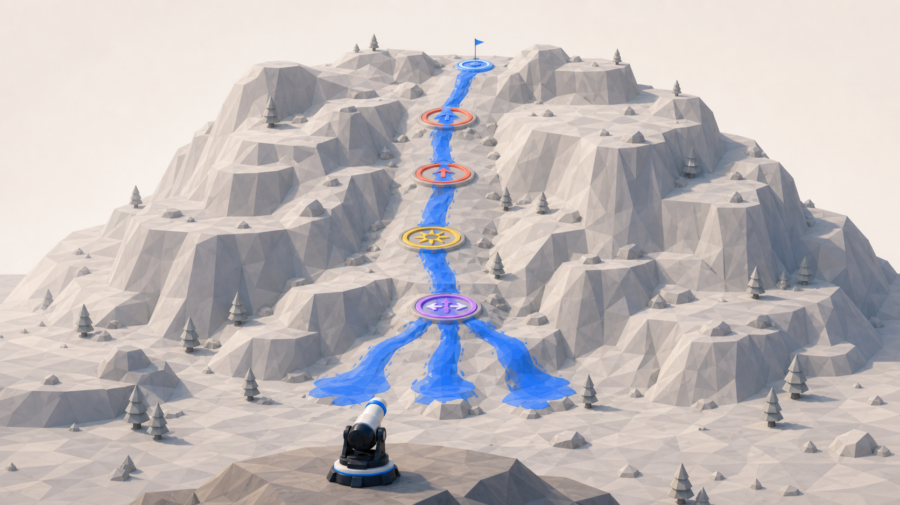
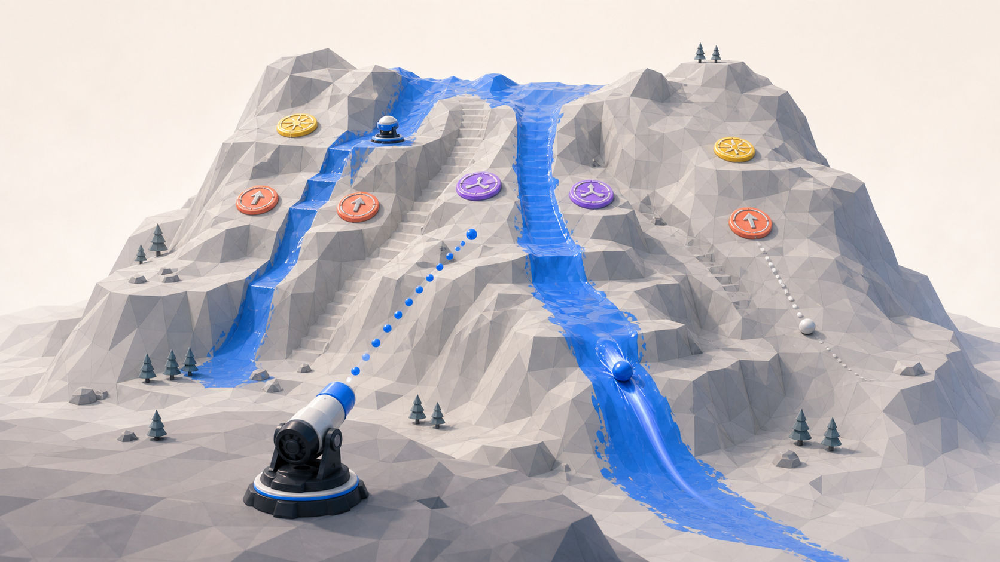
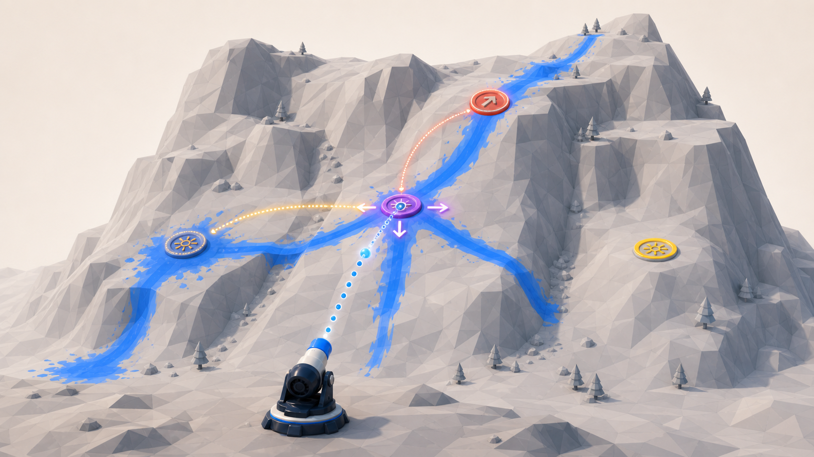
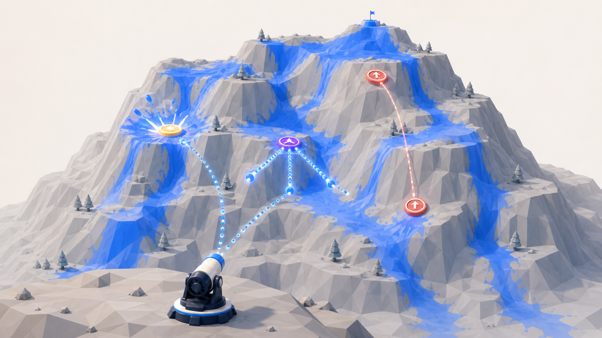
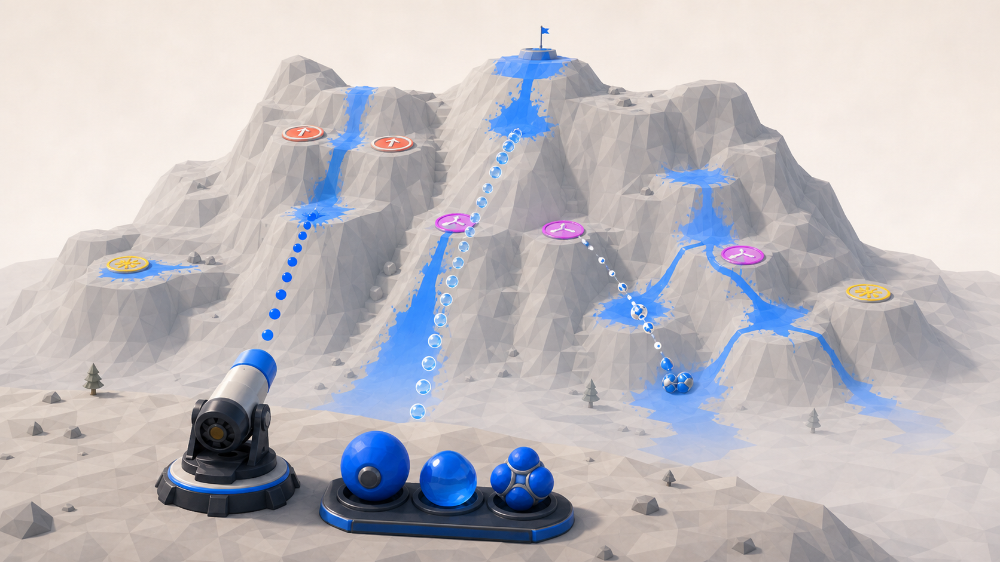
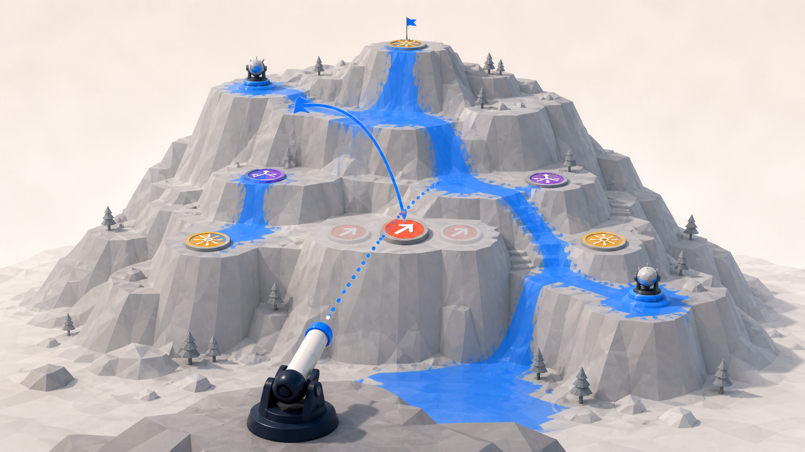

현재 문제는 “너무 쉽다”보다 “선택이 서로 비슷하다”
목표 비율, 탄 수, 시간만 조이면 실패 횟수는 늘지만 플레이어가 하는 생각은 바뀌지 않는다.
현재 매 발사의 질문
“이번에는 안 칠해진 어느 곳을 찍을까?”에 가깝다. 착탄까지는 게임이 많이 도와주고, 착탄 뒤에는 결과를 기다린다.
- 지형 한 점 선택
- 조준값 자동 계산
- 첫 충돌 확인
- 겹치지 않게 재발사
- 결과를 기다림
공간의 가치가 평평함
대부분의 목표 영역은 같은 1%로 환산된다. 특정 경로를 선택해야 할 이유가 약하다.
발사 사이의 관계가 약함
이전 발이 다음 발의 문제를 크게 바꾸지 않는다. 여러 발은 계획의 연속보다 면적의 합이 된다.
빠르지만 긴장은 약함
2배속과 즉시 재발사는 템포를 높였지만, 숙고할 선택이나 조작 숙련은 함께 늘지 않았다.
따라서 다음 실험은 “얼마나 어렵게 맞히나”가 아니라 “왜 그곳을, 왜 지금, 왜 그 공으로 쏘나”를 만들어야 한다.

한 발의 가치가 면적이 아니라 ‘상단 관문 → 중간 관문 → Splitter → 하단 분지’라는 경로 완성으로 결정된다.
DIRECTION 01 · 우선 검증 추천
경로 목표형
많이 칠하는 게임에서, 정해진 공간 관계를 한 줄로 연결하는 게임으로 바꾼다.
핵심 질문
어디서 시작해야 이 순서를 탈까?
플레이어가 하는 일
- 전체 산을 보고 성공 경로 후보를 찾는다.
- 첫 충돌점과 진입 각도로 통과 순서를 계획한다.
- 안전한 짧은 경로와 어려운 긴 연쇄를 비교한다.
왜 지금보다 재미있을 수 있나
모든 지면이 같은 가치가 아니게 된다. 조준 보조가 첫 충돌을 맞혀줘도, 그 뒤에 어떤 지형과 장치를 연결할지는 플레이어의 판단으로 남는다.
클리어와 점수
클리어는 한 개 이상의 필수 경로 완성으로 판단한다. 전체 커버리지는 별 등급이나 개인 기록으로 남겨 기존 PaintSystem의 의미를 보존한다.
가장 큰 위험
절차 생성 산이 아니라 실제로 읽히는 경로를 설계해야 한다. 관문이 체크리스트처럼 보이거나 정답이 한 개뿐이면 금방 퍼즐이 소모된다.
한 판 프로토타입
수제 산 1개, 발사 3회, 시간 제한 없음. 자동 지점 조준은 유지한다. 필수 관문 2개와 Splitter를 한 발로 순서대로 통과하면 클리어. 한 번 플레이한 사람이 발사 전에 자신의 경로를 말로 예측할 수 있는지 본다.

첫 발의 페인트가 단순 점수가 아니라 다음 공이 더 멀리 이동할 수 있는 물리적 길이 된다.
DIRECTION 02 · 시스템 깊이
상태 누적형
첫 발은 점수를 얻는 동시에 다음 발이 이용할 미끄러운 트랙을 만든다.
핵심 질문
지금 칠할까, 다음 발을 준비할까?
플레이어가 하는 일
- 첫 발로 짧지만 정확한 준비 경로를 만든다.
- 두 번째 발을 같은 트랙에 진입시켜 더 긴 이동을 얻는다.
- 기존 페인트를 재사용할지 새 영역을 넓힐지 판단한다.
왜 지금보다 재미있을 수 있나
발사들이 독립적인 면적 합계가 아니라 원인과 결과로 이어진다. 화면에 남은 파란 흔적이 과거 기록이면서 다음 계획의 도구가 된다.
클리어와 점수
경로 목표나 커버리지 모두와 결합할 수 있다. 같은 트랙을 재사용하면 새 면적은 적지만 멀리 있는 고가치 구역에 도달할 수 있다.
가장 큰 위험
페인트의 시각과 실제 마찰이 조금만 어긋나도 억울해진다. PaintSystem의 같은 마스크를 물리 판정에도 사용해야 하며 별도 ‘젖음 상태’를 만들면 안 된다.
한 판 프로토타입
마름/칠해짐 두 상태만 사용한다. 칠해진 면은 마찰만 절반으로 낮추고 다른 물리는 바꾸지 않는다. 두 발로만 도달 가능한 한 개의 높은 경로를 만들어 준비 행동이 자연스럽게 나오는지 확인한다.

장치는 한 번의 보너스가 아니라 다음 장치의 상태와 다음 발의 경로를 바꾸는 순차 시스템이 된다.
DIRECTION 03 · 퍼즐 연쇄
장치 시퀀스형
이번 발로 점수를 얻기보다, 다음 발에서 큰 연쇄가 가능하도록 장치 상태를 준비한다.
핵심 질문
어떤 장치를 먼저 바꿔둘까?
플레이어가 하는 일
- Burst로 막힌 경로를 열거나 다른 장치를 충전한다.
- Uphill Rebound의 방향을 다음 발에 맞게 바꾼다.
- 준비 발과 회수 발의 순서를 정한다.
왜 지금보다 재미있을 수 있나
현재 장치가 ‘맞히면 무조건 이득’인 점에서 벗어난다. 같은 장치도 언제 맞히는지에 따라 가치가 달라져 산 전체가 상태 기계처럼 읽힌다.
클리어와 점수
필수 최종 장치를 활성화하거나, 정해진 상태 조합에서 한 발의 연쇄를 완성하면 클리어한다. 커버리지는 연쇄 결과의 품질을 평가한다.
가장 큰 위험
상태가 눈에 보이지 않으면 기억력 시험이 된다. 각 장치는 최대 두 상태, 변화 방향은 한 가지로 제한해야 인과관계를 읽을 수 있다.
한 판 프로토타입
장치 3개, 발사 3회. 첫 장치를 맞히면 두 번째 장치가 켜지고, 두 번째를 맞히면 세 번째 화살표가 회전한다. 타이머와 랜덤 상태는 넣지 않고 순서 이해만 검증한다.

빠른 연사와 다중 공을 유지하되, 여러 사건을 짧은 시간 안에 연결하는 것이 실력이 된다.
DIRECTION 04 · 아케이드 정체성
연사 콤보형
차분한 퍼즐을 고집하지 않고, 현재의 2배속과 즉시 재발사를 적극적인 점수 공격 게임으로 밀어붙인다.
핵심 질문
지금 쏴서 연쇄를 이어갈까?
플레이어가 하는 일
- 한 공이 장치에 닿기 전에 다음 발을 준비한다.
- 서로 다른 장치를 짧은 간격으로 연결한다.
- 안전한 커버리지보다 긴 콤보와 화려한 연쇄를 노린다.
왜 지금보다 재미있을 수 있나
현재 구현된 빠른 속도와 두 발 동시 진행이 결함이 아니라 핵심 기술이 된다. 보기 좋은 연쇄와 플레이 실력이 같은 방향을 향한다.
클리어와 점수
클리어 문턱은 낮게 두고, 콤보 수·서로 다른 장치 수·한 연쇄의 고유 페인트 면적으로 숙련도를 평가한다. 특정 연쇄는 탄 한 발을 돌려줄 수 있다.
가장 큰 위험
원래의 발사 전 계획 퍼즐에서 가장 멀어진다. 화면이 파란 페인트와 효과로 뒤덮이면 원인과 결과도 사라진다.
한 판 프로토타입
60초, 발사 8회, 장치 5개. 서로 다른 장치가 3초 안에 이어지면 콤보가 계속되고 세 번째 연결에서 탄 1개를 회복한다. 플레이어가 의도적으로 다음 발을 서두르는지 본다.

조준점만 고르는 대신, 같은 조준에서도 어떤 역할의 공을 소비할지 선택한다.
DIRECTION 05 · 도구 선택
탄종 선택형
무거운 공, 점착 공, 분열 공처럼 서로 다른 물리 역할을 제한된 자원으로 선택한다.
핵심 질문
이 경로에는 어떤 공이 필요한가?
플레이어가 하는 일
- 완만한 장거리에는 무거운 공을 쓴다.
- 급경사 표면에는 점착 공을 아껴 쓴다.
- 여러 분지에는 희귀한 분열 공을 사용한다.
왜 지금보다 재미있을 수 있나
조준값이 비슷해도 도구 선택이 해법을 바꾼다. 공의 모양과 결과가 직접 연결되므로 설명 비용도 비교적 낮다.
클리어와 점수
스테이지 시작 시 고정된 소량의 탄종을 준다. 특정 탄 없이도 우회 해법은 가능하지만, 적절한 탄을 쓰면 더 좋은 경로를 얻는다.
가장 큰 위험
공 하나라는 현재의 선명한 정체성을 흐리고, 탄종 × 지형 × 장치 조합의 밸런스 비용이 빠르게 커진다. 메뉴와 자원 UI도 새로 필요하다.
한 판 프로토타입
기본 공과 점착 공 두 종류만 사용한다. 각 2발, 한 개의 급경사 목표. 공 선택이 ‘정답 버튼’이 아니라 서로 다른 우회 경로를 만드는지 확인한다.

조준하기 전에 장치 한 개의 위치나 방향을 정해 이후의 물리 경로를 설계한다.
DIRECTION 06 · 사전 설계
사전 배치형
대포를 쏘기 전에 제한된 소켓 중 하나에 장치를 놓거나 방향을 돌려 물리 해법을 구성한다.
핵심 질문
경로를 어디서 꺾어야 할까?
플레이어가 하는 일
- 지도 보기에서 장치 후보 위치를 비교한다.
- 위치 또는 방향 하나를 확정한다.
- 설계한 반사 경로를 향해 대포를 발사한다.
왜 지금보다 재미있을 수 있나
발사 전 계획이 숫자 조정이 아니라 눈에 보이는 공간 설계가 된다. 같은 산에서도 플레이어가 선택한 장치 배치에 따라 여러 해법이 생긴다.
클리어와 점수
하나의 장치 배치로 필수 경로를 완성하면 클리어한다. 더 적은 장치 회전이나 더 긴 경로는 상위 등급이 될 수 있다.
가장 큰 위험
현재 고정 대포 발사 게임에서 가장 큰 범위 확장이다. 자유 배치는 카메라, 입력, 충돌, 스테이지 검증을 모두 복잡하게 만든다.
한 판 프로토타입
자유 배치 대신 세 개의 고정 소켓만 둔다. 기존 Uphill Rebound 하나를 선택한 소켓에 놓고 두 방향 중 하나로 회전한다. 발사 전 설계가 실제 예측과 만족으로 이어지는지만 검증한다.
한눈에 비교
우선순위는 “현재 자산을 보존하면서 새로운 생각을 만드는가”를 기준으로 한 잠정 판단이다.
| 방향 |
새로 생기는 판단 |
현재 자산 활용 |
새 시스템 부담 |
현재 2배속·연사와 관계 |
정체성 변화 위험 |
| 1경로 목표형 |
통과 순서와 시작점 |
매우 높음 |
낮음~중간 |
속도를 늦춰도, 유지해도 됨 |
낮음 |
| 2상태 누적형 |
준비 발과 회수 발 |
높음 |
중간~높음 |
연사보다 순차 관찰에 적합 |
중간 |
| 3장치 시퀀스형 |
장치 상태의 순서 |
높음 |
중간 |
빠른 속도보다 이해 시간이 중요 |
낮음~중간 |
| 4연사 콤보형 |
연쇄 타이밍과 다음 발 |
높음 |
중간 |
현재 방향과 가장 잘 맞음 |
높음 |
| 5탄종 선택형 |
도구와 자원 배분 |
중간 |
높음 |
둘 다 가능 |
중간~높음 |
| 6사전 배치형 |
발사 전 공간 설계 |
중간 |
매우 높음 |
순차 퍼즐에 적합 |
높음 |
RECOMMENDED NEXT TEST
30개를 고치지 말고, 경로 퍼즐 한 판만 만든다
첫 실험의 목적은 새 콘텐츠를 만드는 것이 아니다. “플레이어가 발사 전에 경로를 예측하고, 결과를 본 뒤 자신의 계획을 수정하는 행위 자체가 재미있는가”만 확인하는 것이다.
경로 목표형이 재미없다면 목표 비율이나 지형 수치 문제가 아니라, 현재 물리 결과가 계획 가능한 재료로 읽히지 않는다는 뜻이다. 그때 상태 누적형 또는 아케이드형으로 더 큰 방향 전환을 선택하면 된다.
권장 검증 계약
- 수제로 읽히는 산 1개만 사용한다.
- 발사 3회, 타이머 없음, 자동 지점 조준 유지.
- 관문 2개와 Splitter를 순서대로 통과하면 클리어.
- 커버리지는 결과 점수로만 표시한다.
- 플레이어가 발사 전 예상 경로를 말하고, 실제 경로와 비교한다.
근거와 참고 경계
유사 게임은 구조를 이해하기 위한 참고이며, 표면 디자인이나 규칙을 그대로 복제하는 대상이 아니다.